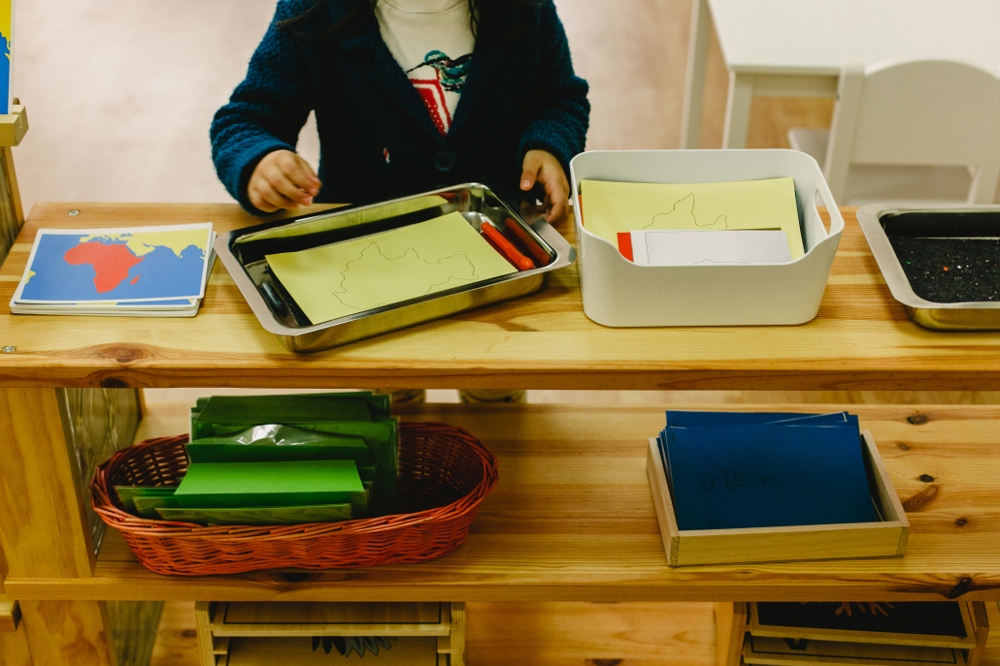

Los padres que lleven a sus hijos a una escuela Montessori deben tener algunos conceptos claros y aplicarlos en casa, pero no porque la escuela lo diga sino porque se los creen y piensan que es lo mejor para el desarrollo de sus hijos y si son contrarios a estos conceptos, que no comulgan con ellos, mejor que elijan otro tipo de escuela porque sino van a entrar en muchas contradicciones y van a estar cuestionando continuamente todo lo que hace la escuela.
https://bonicos.es/el-papel-de-los-padres-y-madres-en-la-educacion-montessori/
Este valor de INDEPENDENCIA o AUTONOMÍA que es la capacidad de un ser vivo de vivir sin la ayuda del otro es un propósito fundamental en una escuela montessori. Si dentro del aula estamos intentando que el niño haga todo solo y luego no se apoya en casa el niño percibe que se le piden cosas distintas en casa y en la escuela y su progreso puede ser más lento.
El niño necesita tener orden externo para crear su orden interno, además de que le da confianza, seguridad, le permite concentrarse y le da consistencia y rutina. Por tanto, algo que los padres pueden hacer en casa por sus hijos es darles un ambiente ordenado.
Son tendencias que tenemos todos los seres humanos, son universales y son: la orientación, el trabajo, la exploración, la mente matemática y las necesidades espirituales. Estas tendencias también se trabajan en una escuela Montessori y pensamos que en casa se deben desarrollar. Se podría decir que son los dones y talentos con los que todos nacemos, son inconscientes y espontáneos. Se manifiestan durante toda la vida como potencialidades creativas.
Los niños aprenden a través del movimiento, lo contrario a lo que ocurre en las escuelas tradicionales, se le pide al niño que esté sentado la mayor parte del tiempo y si lo cumple es un niño que “se porta bien”, y un niño que se mueve mucho “se porta mal”. No es así. Los niños necesitan moverse para su desarrollo intelectual, de ahí la palabra “psicomotricidad”, están unidas las capacidades cognitivas con el movimiento, los niños aprenden moviéndose, no les podemos tener sentados porque no van a desarrollar igual sus capacidades. En un aula Montessori el niño se mueve con libertad, eso no quiere decir que les dejemos correr, saltar, etc. pero sí que pueden moverse por el aula libremente, pueden ir al baño cuando lo necesiten sin tener que preguntar a la guía, pueden beber agua y comer cuando lo necesiten, se confía en ellos, esa confianza que se deposita en los niños hace que ellos no la traicionen. No es como en las escuelas tradicionales, que los niños están sentados todo el tiempo y si un día pueden hacer algo más movido se descontrolan porque no saben qué hacer con esa libertad. En una escuela Montessori el niño tiene libertad desde el primer momento que entra, pero no confundamos libertad, os remito al post de “Libertad y disciplina Montessori” que puedes leer pinchando aquí, es un respeto por el bien común.
El lenguaje es la gran conquista del ser humano. El niño tiene que comunicarse libremente y debemos potenciar mucho el uso del lenguaje, porque es una herramienta que va a hacer que se desarrolle su parte más racional y eso va permitirle que exprese mejor lo que siente y lo que le ocurre en cada momento. Hay que instalarlo mucho a que hable, que se exprese, nunca cortarle ni corregirle, no decirle lo que debe decir o no, permitirle que se exprese libremente respetando a las demás personas.
Cuando un niño pequeño entra en “Casa de niños” con 3 años lo primero que trabajamos con él es Vida Práctica. Es una preparación indirecta para el resto de áreas: sensorial, lenguaje y matemáticas. En vida práctica se trabajan muchas cosas de orden que después les servirán en sensorial, se trabaja mucho la psicomotricidad de la mano y la muñeca que después les van a servir para el desarrollo de la escritura y también muchas secuencias que les preparan para la mente matemática. Entonces los padres deben entender el porqué de estos ejercicios de vida práctica, porque estamos poniendo unas bases muy sólidas que van a hacer que los aprendizajes posteriores los adquiera mejor. Los padres pueden colaborar en casa dejando que los niños hagan todas las actividades del hogar, pongan la mesa, frieguen, plieguen la ropa, barran, etc.
https://bonicos.es/el-papel-de-los-padres-y-madres-en-la-educacion-montessori/